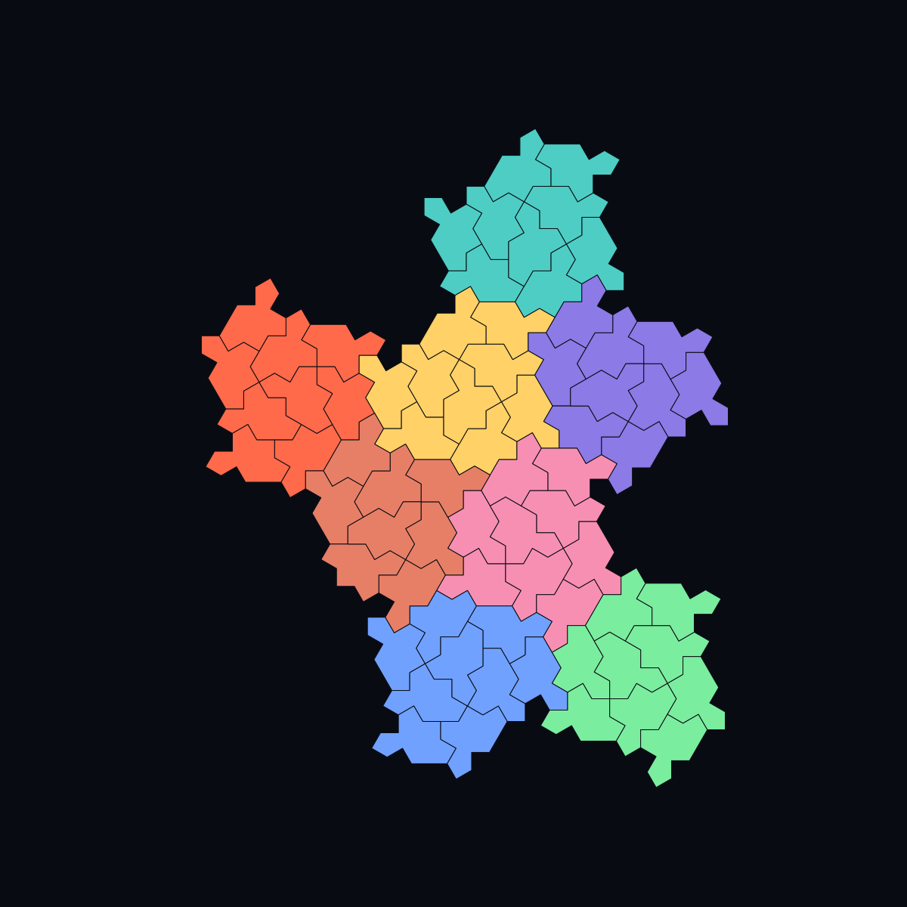

Substitution tiling
A hierarchical method that refines metatiles to produce arbitrarily large aperiodic patches.
How substitution works
A substitution rule is a geometric recipe: replace one labeled large shape with a fixed patch of smaller labeled shapes. Reading the recipe from large to small is deflation; rescaling the small patch back up and grouping it as one larger unit is inflation. A metatile is one of those labeled groups. Labels record roles or orientations that the bare outline may not reveal.[2][3]
{kind=link}
In the Spectre construction, a finite family of labeled clusters combines into larger clusters and then repeats that hierarchy indefinitely.[2][10] The animation shows a finite rendering of that idea. Substitution is not automatically a proof of aperiodicity: one must also show that legal tilings are forced to admit the hierarchy and that the hierarchy rules out a translation period.
Structure inside the hierarchy
The hierarchy is quantitative. For the homochiral Spectre construction, writing NΓ and NΩ for eight- and nine-tile cluster counts, one generation acts by the 2×2 inflation
(NΓ, NΩ) ↦ (NΓ+NΩ, 6NΓ+7NΩ).
The Perron root is 4+√15≈7.873, and the asymptotic Ω:Γ ratio is the same value.[10] Six orientations of each cluster give twelve metatile states.

Independently, Hat-family supervectors obey Vn=3Vn−1−Vn−2 and, for the normalized Hat, Vn=(F2n, √3 L2n), so Fibonacci and Lucas counts appear as concrete coordinates rather than slogans.[12] Spectre tilings also decompose into triangular hex-clusters of 1, 3, or 6 hexagons dual to the H8/H9 hierarchy,[11] and the whole system embeds in a rhombic framework shared by the Hat and Turtle.[8]
Substitution systems can even be built from overlapping iterated function systems, connecting tilings to fractal geometry.[14] Sturmian sequences — the one-dimensional cousins of aperiodic order — provide lattice models with closely related structure.[13] A newer construction starts from three families of Ammann-bar lines whose short and long gaps follow balanced Sturmian words. Irrational slope removes translational periods; for every quadratic irrational slope, the authors construct an aperiodic tile set whose expansion factor is a unit of the corresponding real quadratic field.[73] Ref. 73 is a concise note whose complete classification and proofs point back to ref. 13; the two should not be read as independent corroboration. The construction produces finite tile sets, not new single aperiodic monotiles. Labbé and Selinger give an explicit torus Markov partition construction for Hat tilings with fractal boundaries,[53] complementing the inflation picture above.
A substitution also defines a tiling hull: translate admitted tilings and close the resulting family in the local topology. Patch frequencies and measurable spectral statements belong to this ensemble, not to one arbitrarily clipped rendering. Under primitivity and recognizability, invariant measures stabilize frequencies; pure-point diffraction still needs geometric or spectral hypotheses.
Detailed treatments continue in Sturmian lattices, cut-and-project schemes, and diffraction and dynamical spectrum.
Practical generation
For engineering and graphics, inflate until a supertile safely covers the requested rectangle, circle, or polygon; transform all child tiles; reject tiles outside the mask; then either retain whole boundary tiles or geometrically clip them. Record the seed or root metatile, generation, scale, coordinate convention, labels, affine transforms, and clipping policy. IDs are stable only if the generator defines and versions that convention.
Do not conflate generation, hierarchy recognition, local validation, global extension, and exhaustive enumeration. An explicit substitution can generate and label millions of tiles efficiently while saying nothing by itself about whether an arbitrary user-supplied frontier extends. See Computational generation and navigation for exact coordinates, hierarchy addresses, finite-state methods, and GPU rendering.
{kind=link}
Validation and recurrence
Validate a generated patch by checking polygon closure, edge-to-edge contacts, overlap, uncovered area, legal labels, and parent–child counts. Compare several generations with the published substitution matrices or known count recurrences; Fibonacci and Lucas sequences occur in Spectre supertile counts.[12] Boundary clipping should be tested separately because it intentionally creates shapes that are no longer copies of the prototile.
At an advanced level, a substitution matrix describes how many children of each label each parent produces. Its dominant eigenvalue controls area growth, while other eigenstructure helps describe frequencies. These algebraic facts do not by themselves establish a cut-and-project or model-set description—a model set selects projected lattice points using a window in an auxiliary “internal” space. CAP and CASPr require additional constructions.[31][32]
Limits and open questions
Different legal seeds, boundary choices, and representatives can produce different finite patches even when they belong to the same tiling space. A substitution generator usually produces a controlled subset or parametrization of legal tilings, not necessarily an enumeration of every legal finite patch. Numerical coordinates also accumulate error, so exact symbolic geometry or tolerance-aware validation is preferable for fabrication and diffraction studies.
See also
Aperiodic monotile, Spectre tile, Computational generation and navigation, Sturmian lattices and aperiodic tile sets, Cut-and-project schemes and model sets
Categories: Mathematics · Concepts